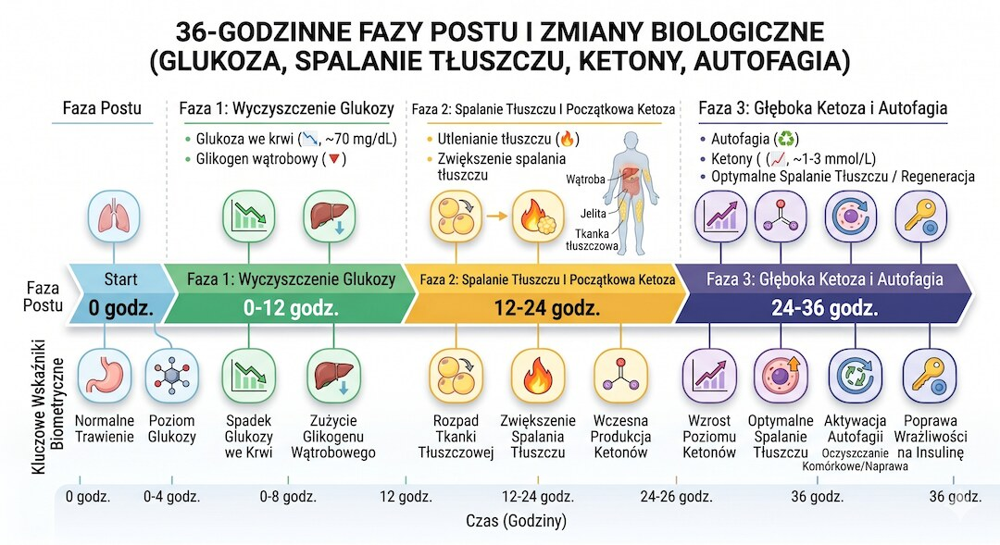
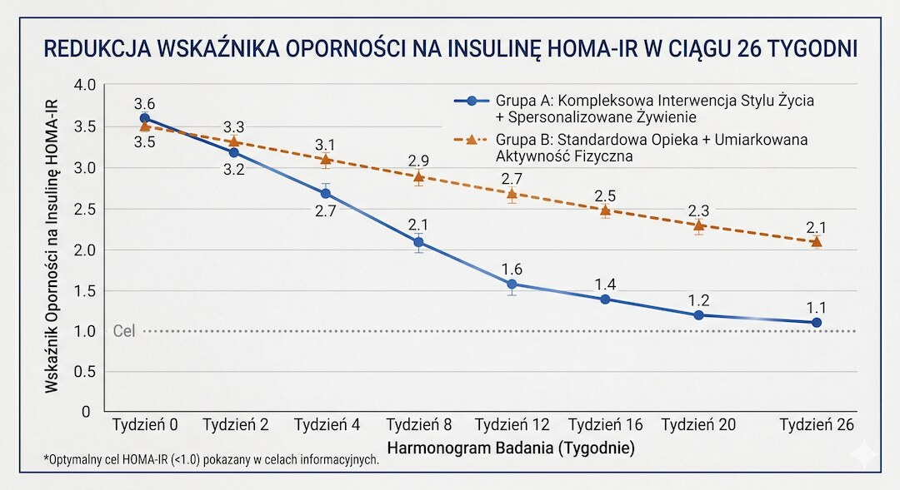
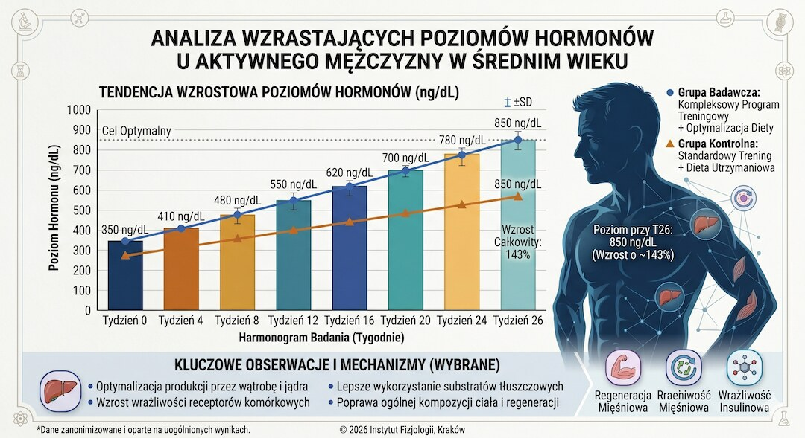
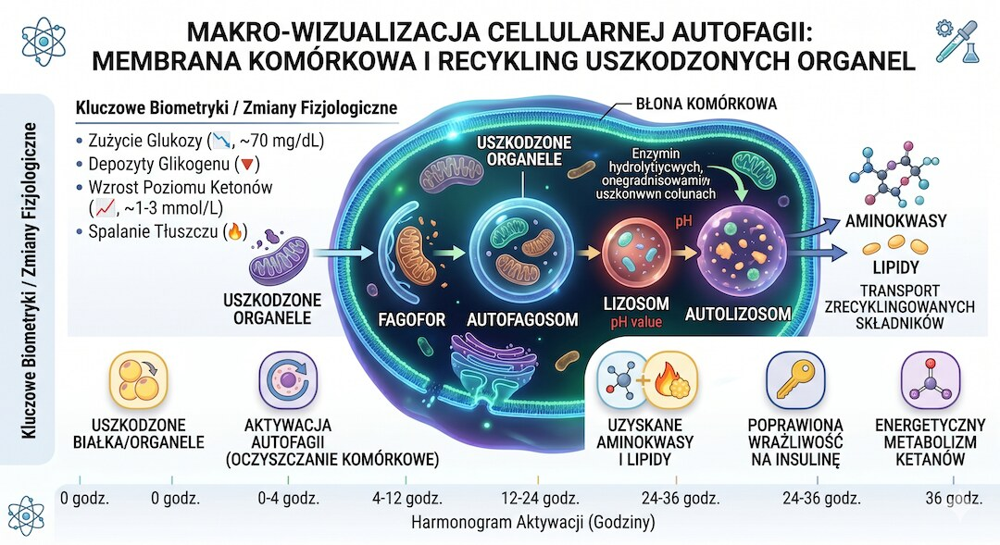
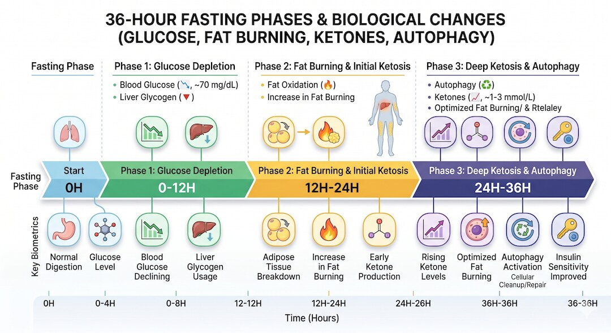

W sieci krąży teza, że 36-godzinny post to najlepsza medycyna świata. YouTube, podcasterzy zdrowotni i influencerzy wrzucają ją bez mrugnięcia okiem. Sprawdziłem najnowsze badania kliniczne z lat 2024–2025 i powiem ci wprost: część tych twierdzeń ma solidne naukowe podstawy, część to czysty hype, a jedno słowo w tym haśle – najlepsza – jest po prostu nieprawdziwe. Ale wyniki, które faktycznie się pojawiają przy 36-godzinnym poście, robią wrażenie nawet na sceptyku. Zaraz je wszystkie pokażę razem z ich ograniczeniami.
Szybka odpowiedź
36-godzinny post nie jest magiczną terapią na wszystko, ale potrafi wyraźnie poprawić wrażliwość na insulinę, zwiększyć produkcję ketonów i uruchomić procesy naprawcze komórek. Najmocniejsze efekty dotyczą metabolizmu i autofagii, a największe ryzyko po 50-tce wiąże się z odwodnieniem, zbyt częstym powtarzaniem postu i brakiem sensownego planu powrotu do jedzenia.
Kluczowe wnioski
- Po 24–36 godzinach postu poziom ketonów wzrasta nawet 4-krotnie, a hormonu wzrostu (HGH) istotnie – to potwierdzone badaniami klinicznymi RCT.
- Autofagia (samosprzątanie komórek) faktycznie wzrasta przy poście przerywanym – pierwsze bezpośrednie ludzkie potwierdzenie pochodzi z maja 2025 roku (Journal of Physiology).
- Ryzyko utraty mięśni przy jednorazowym poście 36h jest minimalne, pod warunkiem odpowiedniego odżywienia po poście i treningu oporowego.
- Sformułowanie najlepsza medycyna świata to clickbait – dowody na długoterminowe efekty u ludzi są wciąż ograniczone i wymagają więcej wieloletnich badań RCT.
Co tak właściwie dzieje się z ciałem przez te 36 godzin?
Kiedy przestajesz jeść, twoje ciało nie wchodzi od razu w tryb paniki. Przez pierwsze 6–8 godzin po ostatnim posiłku organizm spokojnie spala glukozę z glikogenu wątrobowego. To zupełnie normalna praca na co dzień – tak działasz przez całą noc podczas snu. Gdyby samo niespanie i niejedzenie przez 8 godzin było czymś niezwykłym, nie przeżyłby żaden człowiek. Problem zaczyna się i – paradoksalnie – zaciekawia, gdy głodzenie trwa dłużej.
Między 12 a 16 godziną bez jedzenia wątrobowe zapasy glikogenu zaczynają się wyraźnie kurczyć. Organizm przestawia się na tłuszcz jako główne paliwo. Wolne kwasy tłuszczowe zaczynają zalewać krwioobieg. Tu zaczyna się metaboliczna ciekawostka: większość ludzi nigdy, dosłownie nigdy, nie doświadcza tej fazy – bo zanim do niej dotrą, już sięgają po kanapkę lub kawę z mlekiem. Przeciętny Polak po pięćdziesiątce nie jest na czczo dłużej niż 8–10 godzin. Co się dzieje, gdy ten czas przeciągnie do 36 godzin? Zupełnie inna fizjologia.
Między 16 a 24 godziną bez jedzenia wątroba zaczyna intensywnie produkować ciała ketonowe – szczególnie beta-hydroksymaślan (beta-HB). To alternatywne paliwo awaryjne dla mózgu i mięśni, które normalnie jest śladowe we krwi. Badanie kliniczne Borera i współpracowników opublikowane w 2024 roku na łamach PMC wykazało, że przy dwukrotnym w tygodniu 36-godzinnym poście poziom ketonów wzrósł czterokrotnie w porównaniu do krótszych protokołów przerywanego postu stosowanych u tych samych uczestników. To nie jest pomijalny efekt – to fundamentalna zmiana paliwa, na którym pracuje twoje ciało i twój mózg.
W okolicach 24–36 godziny dochodzi do najgłębszego przestawienia metabolicznego, jakie możesz osiągnąć bez leków lub ekstremalnych interwencji dietetycznych. Insulina spada do najniższego możliwego poziomu – niższego niż po jakiejkolwiek diecie niskowęglowodanowej. Wolne kwasy tłuszczowe i ketony dominują jako surowiec energetyczny. Kortyzol i adrenalina delikatnie rosną – to fizjologiczna mobilizacja, nie patologia. Glukagon, hormon przeciwny do insuliny, rośnie i nakazuje wątrobie produkować glukozę de novo z aminokwasów i glicerolu. I właśnie w tym oknie uruchamiają się procesy, o których wszyscy mówią: autofagia, wzrost hormonu wzrostu i głęboka mobilizacja tłuszczu trzewnego. Zaraz sprawdzimy, co z tego rzeczywiście potwierdza nauka kliniczna, a co to tylko ładnie brzmiące słowa z YouTube.
Warto podkreślić jedno: przegląd systematyczny opublikowany przez Endocrine Reviews w 2025 roku (Oxford Academic), obejmujący randomizowane badania kliniczne z okresu do października 2024 roku, potwierdza, że przerywany post i post alternatywny wywołują realną, mierzalną i powtarzalną odpowiedź metaboliczną u ludzi. To nie są obserwacje na myszach przeniesionych siłą do artykułów popularno-naukowych. To wyniki kontrolowanych prób klinicznych na prawdziwych ludziach. Co ważne, ci sami autorzy zastrzegają, że skala tych efektów i ich długoterminowe utrzymanie wymagają dalszych badań. Uczciwa nauka tak właśnie wygląda.

Czy insulinooporność i glukoza naprawdę się resetują?
To jeden z najczęściej powtarzanych argumentów zwolenników długiego postu: że głodzenie się resetuje wrażliwość na insulinę, wyrównuje glikemię i naprawia metabolizm węglowodanowy. I tutaj nauka jest zaskakująco jednoznaczna – tak, efekt na insulinooporność jest realny, powtarzalny i udokumentowany w randomizowanych badaniach klinicznych. Nie w ankietach wśród influencerów, nie w testach przed i po na grupie 12 osób – w prawdziwych RCT z grupami kontrolnymi.
W przeglądzie Endocrine Reviews (2025, Oxford Academic), którego autorzy przeanalizowali randomizowane badania kliniczne opublikowane do października 2024 roku, potwierdzono, że przerywany post w różnych formach – w tym post alternatywny (co drugi dzień) oraz protokoły 2 dni postne na tydzień – konsekwentnie obniżają wskaźnik insulinooporności HOMA-IR. Co kluczowe: efekt ten był obserwowany niezależnie od utraty masy ciała. Oznacza to, że samo głodzenie, nie tylko deficyt kaloryczny, wyzwala zmiany w wrażliwości komórek na insulinę.
Szczególnie interesująca jest praca Horne i współpracowników opublikowana w NPJ Metabolic Health and Disease w 2024 roku, oparta na randomizowanym badaniu kontrolowanym z udziałem 68 dorosłych w wieku 21–70 lat. Uczestnicy pościli przez 24 godziny dwa razy w tygodniu przez pierwsze 4 tygodnie, potem raz w tygodniu przez kolejne 22 tygodnie. Wynik? Znaczna i statystycznie istotna redukcja HOMA-IR bez klinicznie istotnej utraty wagi – co sugeruje, że mechanizm biologiczny głodzenia, nie sama utrata kilogramów, odpowiada za poprawę wrażliwości na insulinę. Dla osoby z prediabetes lub podwyższoną insuliną na czczo, która nie może lub nie chce stosować metforminy, to naprawdę istotna informacja kliniczna. Jeśli masz podwyższoną insulinę na czczo i zastanawiasz się nad interwencją, warto o tym poczytać głębiej w naszym artykule o badaniach krwi po 50-tce przy prediabetes i insulinie na czczo.
Mechanizm biologiczny jest dobrze opisany: podczas postu spada poziom insuliny, co wymusza na komórkach tłuszczowych oddanie zgromadzonego tłuszczu do spalenia. Receptory insulinowe na powierzchni komórek mięśniowych i wątrobowych, przeciążone przez lata ciągłej stymulacji wysoką insuliną, dostają czas na resensytyzację. To jak restart przeciążonego serwera – nie magia, tylko fizjologia. Badanie ClinicalTrials.gov (NCT04283318) badające wpływ 36-godzinnego postu na metabolizm glukozy u osób zdrowych, otyłych i z cukrzycą typu 2 potwierdziło zmiany w indeksach wrażliwości insulinowej (QUICKI, Matsuda Index, ISI, HOMA-IR) zarówno po 12, jak i po 36 godzinach głodzenia.
Jeden ważny niuans, który uczciwie trzeba wymienić: większość badań dotyczy postów 24-godzinnych lub naprzemiennych co drugi dzień. Ekstrapolowanie wyników bezpośrednio na 36-godzinny post ma sens biologicznie, bo efekty metaboliczne są silniejsze przy dłuższym oknie głodzenia, ale brakuje wystarczającej liczby randomizowanych badań klinicznych dedykowanych dokładnie 36 godzinom jako oddzielnej interwencji. To uczciwe ograniczenie, o którym autorzy Endocrine Reviews 2025 wyraźnie piszą, nie zamiatając go pod dywan.

Czy hormon wzrostu naprawdę wzrasta o 1300%?
Ta liczba pojawia się dosłownie wszędzie. 1300% wzrostu HGH przy poście – brzmi jak reklama dożylnej terapii hormonalnej w klinice medycyny estetycznej, nie jak suchy wynik badania naukowego. Prawda jest bardziej skomplikowana i paradoksalnie nadal imponująca – ale wymaga kontekstu, bo bez niego jest po prostu mylącym clickbaitem.
Cytowana liczba 1300% pochodzi z klasycznego badania Ho i współpracowników z 1988 roku opublikowanego w New England Journal of Medicine. Autorzy mierzyli pulsatywne wydzielanie HGH u mężczyzn podczas 5-dniowego postu i wykazali wielokrotny wzrost dobowego wyrzutu hormonu wzrostu. Liczba 1300% pojawia się w niektórych interpretacjach jako skumulowany efekt u kobiet podczas wielodniowego postu. Dotyczyła dłuższego głodzenia i była mierzona całościowo przez kilka dób – nie jednorazowego 36-godzinnego postu u zdrowego faceta w średnim wieku.
Co mówią nowsze dane? Horne i współpracownicy (Frontiers in Endocrinology, luty 2025) opublikowali wtórną analizę randomizowanego badania kontrolowanego, która wykazała, że 24-godzinny post na wodzie znacznie zwiększa stężenie HGH we krwi, a efekt ten był niezależny od utraty masy ciała. Równolegle, analiza z NPJ Metabolic Health and Disease z 2024 roku potwierdziła, że wyższe wyjściowe stężenie HGH u uczestników badania korelowało z lepszymi efektami metabolicznymi intermittent fasting – co sugeruje, że HGH jest aktywnym mediatorem efektów postu, a nie tylko epifenomenem. Dla mężczyzny po pięćdziesiątce, którego naturalny poziom HGH spada o kilka procent rocznie, to całkiem interesująca dynamika. Więcej o hormonach po 50-tce znajdziesz w naszym materiale o testosteronie po 50 i naturalnym wsparciu hormonalnym.
Co robi ten HGH podczas postu i dlaczego to ważne? Przede wszystkim chroni masę mięśniową przed rozpadem – działa anabolicznie nawet w warunkach braku pokarmu. Mobilizuje spalanie tłuszczu bezpośrednio z komórek tłuszczowych (lipoliza). Wspomaga regenerację tkanek i ma działanie immunomodulujące. To ewolucyjne zabezpieczenie: kiedy praludzie przez kilka dni nie mieli dostępu do pożywienia, musieli zachować siłę mięśniową do polowania. Ewolucja zadbała, żeby głód nie oznaczał automatycznej utraty mięśni. HGH to jeden z kluczowych mechanizmów tej ochrony.
Czy to oznacza, że post zastąpi terapię hormonem wzrostu? Absolutnie nie. Wartości HGH osiągane podczas postu są znacznie niższe niż stosowane w terapii zastępczej i mają inny profil czasowy wydzielania. Ale czy to fizjologicznie korzystny efekt, potwierdzony w kontrolowanych warunkach? Tak – i to jest wystarczające, żeby brać go poważnie w kontekście stylu życia.

Autofagia – czy komórki naprawdę sprzątają się podczas postu?
Autofagia to samozjadanie się – komórka rozkłada uszkodzone białka i odpady, używając ich do regeneracji. Po Noblu z 2016 roku słowo to stało się modnym hasłem świata longevity i zaczęto przypisywać je niemal każdemu postowi. Problem w tym, że przez lata brakowało bezpośrednich dowodów u ludzi. Sytuacja zmieniła się dopiero wraz z badaniami opublikowanymi w 2025 roku.
Do maja 2025 roku nie mieliśmy bezpośredniego dowodu, że post przerywany zwiększa autofagię u ludzi mierzoną fizjologicznie, a nie tylko na podstawie pośrednich markerów genowych lub białkowych. Wszystkie wcześniejsze badania opierały się albo na modelach mysich, albo mierzyły poziomy białek regulujących autofagię (LC3, p62, Beclin1) jako proxy – nie rzeczywisty przepływ autofagiczny. To ważne rozróżnienie: marker może wzrastać lub spadać niezależnie od faktycznej aktywności procesu.
To właśnie zmieniło przełomowe badanie Bensalema i współpracowników opublikowane w Journal of Physiology w maju 2025 roku. W randomizowanym badaniu kontrolowanym z udziałem 121 osób z otyłością, po 6 miesiącach protokołu intermittent fasting z ograniczeniem czasowym, badacze zmierzyli autofagiczny strumień w komórkach jednojądrzastych krwi obwodowej za pomocą fizjologicznie relewantnej metody z użyciem chlorochiny. Wynik: istotny wzrost autofagicznego strumienia w grupie iTRE w porównaniu do grupy standardowej opieki po 6 miesiącach. To pierwsze tego typu potwierdzenie u żywych ludzi – nie w mysim modelu, nie in vitro, ale u prawdziwych uczestników badania klinicznego.
Jest jednak kilka ważnych zastrzeżeń, których nie wolno przemilczeć. Po pierwsze: to badanie eksploracyjne – oznacza to, że wymaga replikacji w większych i bardziej zróżnicowanych próbach. Po drugie: efekt był widoczny po 6 miesiącach protokołu, a nie po jednorazowym 36-godzinnym poście. Badacze sami zaznaczają w artykule, że potrzeba więcej danych, żeby wyciągać kliniczne wnioski. Po trzecie: badanie dotyczyło osób z otyłością, więc wyniki niekoniecznie mają takie samo przełożenie na osoby ze zdrową masą ciała. Odrębne badanie z PubMed, opublikowane przez Rollanda i współpracowników w 2018 roku, analizowało wpływ 36-godzinnego postu na markery autofagii w tkance mięśniowej u ludzi. Wyniki były skromne: efekt był wyraźniejszy u osób nieaktywnych fizycznie niż wytrenowanych, co sugeruje, że trening może częściowo zastępować lub równoważyć efekt postu na autofagię mięśniową.
Nie bez znaczenia jest kontekst nowotworowy. Przegląd systematyczny opublikowany w PMC w maju 2025 roku wskazuje, że post przerywany może zarówno hamować wzrost nowotworów poprzez autofagię jako mechanizm supresora guza, jak i w pewnych warunkach wspierać przeżycie komórek nowotworowych jako mechanizm adaptacyjny pod presją metaboliczną. To podwójna i zależna od kontekstu rola autofagii w onkologii. Jest to powód, dla którego osoby w trakcie leczenia onkologicznego powinny jakiekolwiek protokoły postne bezwzględnie konsultować z prowadzącym onkologiem. Więcej o badaniach profilaktycznych po 50-tce i sygnałach ostrzegawczych znajdziesz na naszym portalu.

Czy 36-godzinny post niszczy mięśnie?
To pytanie boli każdego, kto ciężko pracował na swoją masę mięśniową – zwłaszcza po pięćdziesiątce, gdy mięśnie buduje się wolniej i traci szybciej niż w dwudziestych latach. Odpowiedź naukowa jest precyzyjna: przy jednorazowym, dobrze zaplanowanym poście 36-godzinnym ryzyko klinicznie istotnej utraty mięśni jest niskie – ale nie zerowe i zależy od kontekstu, nawodnienia, podaży białka w dniach jedzenia i poziomu aktywności fizycznej.
Najnowsze twarde dane przynosi badanie Naegela i współpracowników opublikowane w Journal of Cachexia, Sarcopenia and Muscle w kwietniu 2025 roku. To badanie prospektywne z udziałem 32 osób, w tym połowy powyżej 50. roku życia, analizowało wpływ 12-dniowego postu z bardzo niską podażą kalorii (250 kcal/dzień) na strukturę, skład i funkcję mięśni przy użyciu zaawansowanej techniki MRI i spektroskopii rezonansowej. Przy średniej utracie masy ciała 5,9 kg zmiana objętości mięśnia łydki wyniosła zaledwie 5,4% – i była tłumaczona głównie utratą glikogenu i wody związanej z glikogenem, a nie faktycznym katabolizmem białek kontraktylnych. Siła mięśniowa mierzona maksymalnym skurczem dowolnym pozostała zachowana w obu grupach wiekowych i obydwu płciach. Dodatkowy wniosek: miesięc po zakończeniu postu parametry mięśniowe wróciły do wartości wyjściowych. Mięśnie nie zostały trwale zniszczone.
Jeśli 12-dniowy post z minimalną podażą kalorii nie zniszczył mięśni w sposób klinicznie istotny, to 36-godzinny post w normalnych warunkach tygodniowych jest znacznie mniejszym obciążeniem. Badanie Borera i współpracowników (PMC, 2024) obserwowało uczestników przez 82 tygodnie przy dwukrotnych 36-godzinnych postach tygodniowo i nie stwierdzono spowolnienia spoczynkowej przemiany materii ani istotnej utraty masy mięśniowej. To ważny wynik, bo jedna z najczęstszych obaw dotyczących długich postów to właśnie mechanizm obronny metabolizmu – spowolnienie podstawowej przemiany materii jako odpowiedź na chroniczne głodzenie. Przy protokole 36h dwa razy w tygodniu efekt ten nie wystąpił.
Kluczowe zmienne chroniące mięśnie podczas postu 36-godzinnego to trzy filary: po pierwsze, odpowiednia podaż białka w dniach jedzenia – minimum 1,6 do 2,0 gramów na kilogram masy ciała, najlepiej rozłożona równomiernie na posiłki. Po drugie, trening oporowy, który wysyła sygnał anaboliczny do komórek mięśniowych i utrzymuje syntezę białek na odpowiednim poziomie. Po trzecie, właściwe nawodnienie i uzupełnianie elektrolitów podczas samego postu – bez tego ryzyko skurczów i osłabienia mięśni znacznie rośnie. Jeśli pomijasz któryś z tych elementów, post rzeczywiście może zaczynać jadać mięśnie zamiast tłuszczu trzewnego. Więcej o ochronie mięśni po pięćdziesiątce przeczytasz w naszym materiale o białku i kreatynie po 50-tce dla ochrony mięśni.
Warto dodać, że HGH wzrastający podczas postu działa ochronnie na masę mięśniową – hamuje rozpad białek kontraktylnych i wspomaga mobilizację tłuszczu jako paliwa alternatywnego. To ewolucyjne zabezpieczenie: kiedy praludzkie organizmy przez kilka dni nie miały dostępu do pożywienia, musiały zachować siłę mięśniową do polowania i ucieczki. Ewolucja zadbała o to, żeby głód nie równał się automatycznej utracie mięśni. Jeden mechanizm więcej działający na twoją korzyść podczas postu – o ile robisz to z głową.
Dla kogo post 36-godzinny jest ryzykowny lub zakazany?
Zanim przejdziesz do praktyki, musisz wiedzieć, że post 36-godzinny – jak każda potężna interwencja – ma swoje wyraźne przeciwwskazania. I nie chodzi tu o to, żeby straszyć, ale o to, że te ograniczenia są poparte konkretnymi danymi klinicznymi, a nie ostrożnością typową dla etykiety na opakowaniu leków.
Twarde przeciwwskazanie numer jeden: cukrzyca typu 1. Kliniczne badanie Mosera i współpracowników opublikowane w Frontiers in Endocrinology w 2021 roku przeprowadzone metodą crossover na dorosłych z cukrzycą typu 1 wykazało, że nawet jeden 36-godzinny post niesie istotne i trudno przewidywalne ryzyko hipoglikemii i zaburzeń glikemicznych w tej grupie, mimo intensywnego monitorowania stężenia glukozy. Niestabilność metaboliczna podczas postu u tych pacjentów jest zbyt duża, żeby bezpiecznie zalecać ten protokół bez bezpośredniego nadzoru diabetologa i specjalistycznego protokołu dostosowania insulinoterapii.
Lista osób, które powinny unikać lub bardzo ostrożnie podchodzić do postu 36-godzinnego bez konsultacji lekarskiej, jest konkretna: kobiety w ciąży i karmiące piersią (zapotrzebowanie kaloryczne i mikroodżywcze jest zbyt wysokie), osoby z potwierdzoną historią zaburzeń odżywiania – anoreksja, bulimia, ortoreksja – bo post może być potencjalnym wyzwalaczem nawrotu, osoby przyjmujące leki hipoglikemizujące inne niż metformina, osoby z aktywną chorobą nerek lub wątroby, osoby po poważnych zabiegach chirurgicznych w ostatnich 3 miesiącach oraz seniorzy powyżej 70. roku życia bez konsultacji lekarskiej i dobrego stanu odżywienia wyjściowego. W tej ostatniej grupie ryzyko sarkopenii i niedoborów elektrolitowych jest zbyt wysokie, żeby eksperymentować bez nadzoru specjalisty.
Dla zdrowej osoby po pięćdziesiątce bez wyżej wymienionych schorzeń, dobrze nawodnionej, z odpowiednim wsparciem żywieniowym w dniach jedzenia i bez leków, które wymagają posiłku do działania lub metabolizmu – ryzyko jest niskie i dobrze tolerowane. Pierwsze 2–3 próby postu 36-godzinnego mogą wiązać się z silnymi bólami głowy (szczególnie u osób przyzwyczajonych do wysokiego spożycia kofeiny), zawrotami głowy przy wstawaniu, drażliwością i trudnością z koncentracją w okolicach 18–24 godziny postu. To nie jest sygnał choroby, ale efekt adaptacji metabolicznej i przejściowego niedoboru elektrolitów. Żelazna zasada, której nie wolno ignorować: sód, potas i magnez podczas postu są obowiązkowe jeśli post trwa ponad 24 godziny. Suplementacja elektrolitów w wodzie do picia rozwiązuje problem w większości przypadków.
Więc czy to naprawdę najlepsza medycyna świata?
Czas na werdykt. Twierdzenie, że 36-godzinny post to najlepsza medycyna świata, należy rozebrać na dwie oddzielne części i ocenić je oddzielnie. Część pierwsza: post 36-godzinny ma udowodnione klinicznie benefity zdrowotne. Część druga: to najlepsza medycyna. Pierwsza część jest prawdziwa. Druga jest clickbaitem, który upraszcza złożoną rzeczywistość do poziomu tytułu clickbaitowego poradnika zdrowotnego na YouTube.
Oto co naprawdę potwierdzają badania z lat 2019–2025. Redukcja insulinooporności mierzona HOMA-IR, niezależna od utraty wagi, potwierdzona w randomizowanych badaniach klinicznych – udowodnione. Wzrost HGH w trakcie postu, niezależny od utraty wagi, ze związkiem z kardiometabolicznymi markerami ryzyka – udowodnione. Czterokrotny wzrost ketonów (beta-hydroksymaślan) po 36 godzinach głodzenia – udowodnione. Poprawa markerów sercowo-naczyniowych: obniżenie LDL, redukcja sICAM-1 jako markera zapalenia naczyniowego, zmniejszenie tłuszczu trzewnego przy poście alternatywnym przez 6 miesięcy – udowodnione przez badanie Cell Metabolism 2019. Pierwsze bezpośrednie ludzkie potwierdzenie wzrostu autofagicznego strumienia przy intermittent fasting – opublikowane w maju 2025 roku, wymagające replikacji.
A co nie jest potwierdzone lub jest poważnie ograniczone w dostępnych danych? Brak wieloletnich randomizowanych badań klinicznych dedykowanych dokładnie 36-godzinnemu postowi jako oddzielnej interwencji u ogólnej populacji. Brak danych o utrzymaniu efektów przez 3–5 lat. Autofagia u ludzi potwierdzona eksploracyjnie po 6 miesiącach iTRE – to odkrycie świeże, jedno badanie, wymaga replikacji. I przede wszystkim: nie istnieje żadne badanie head-to-head porównujące post 36-godzinny z lekami kardiologicznymi, hipoglikemizującymi, statynami lub onkologicznymi. Przeglądowy artykuł w Endocrine Reviews z 2025 roku wprost stwierdza, że potrzeba więcej prospektywnych, kontrolowanych badań, zanim przerywany post będzie mógł być klinicznie rekomendowany jako terapia w konkretnych wskazaniach.
Co więcej, medycyna to nie jeden zabieg. Post nie leczy złamań, zakażeń bakteryjnych ani zaawansowanej miażdżycy. Nie zastąpi antybiotyku przy zapaleniu płuc. Nie jest w stanie cofnąć dekad zaniedbań metabolicznych w ciągu kilku tygodni. Jest potężnym narzędziem profilaktycznym i metabolicznym – i to już wystarczająco dużo, żeby brać go poważnie. Nie potrzebuje tytułu najlepsza medycyna świata, żeby być wartościowy i warty uwagi. Jeśli interesuje cię, jak praktycznie wdrożyć post przerywany w codziennym życiu po 50-tce, sprawdź nasz przewodnik z konkretnymi protokołami.
Moje osobiste podsumowanie, bez owijania w bawełnę: jeśli jesteś zdrowym mężczyzną po pięćdziesiątce z nadwagą brzuszną, podwyższoną insuliną na czczo lub granicznym LDL, za dużo siedzisz i za mało się ruszasz – post 36-godzinny raz w tygodniu lub raz na dwa tygodnie, uzupełniony o trening oporowy trzy razy w tygodniu i odpowiednią podaż białka, jest prawdopodobnie jedną z najskuteczniejszych bezlekowych interwencji metabolicznych, jakie masz w zasięgu bez recepty i bez kosztów. Nie cudownym lekarstwem. Nie medycyną wszech czasów. Jednym z narzędzi w skrzynce – i to naprawdę niezłym.

Najczęściej zadawane pytania
Po ilu godzinach postu zaczyna się autofagia u ludzi?
Precyzyjne określenie progu aktywacji autofagii u ludzi jest trudne – badania na modelach zwierzęcych sugerują aktywację po 12–24 godzinach głodzenia, ale u ludzi bezpośrednie potwierdzenie wzrostu autofagicznego strumienia pochodzi z badania Journal of Physiology (maj 2025), gdzie efekt był widoczny po 6 miesiącach protokołu iTRE, nie po jednorazowym poście. Nie ma danych pozwalających wskazać dokładną godzinę włączenia autofagii u człowieka.
Czy post 36-godzinny jest bezpieczny dla osoby po 50-tce?
Dla zdrowej osoby po 50-tce bez cukrzycy, choroby nerek, zaburzeń odżywiania i bez leków hipoglikemizujących – jest ogólnie bezpieczny. Badanie Cell Metabolism (Stekovic et al. 2019) stosowało ADF przez ponad 6 miesięcy bez efektów niepożądanych u zdrowych, nieotyłych dorosłych w średnim wieku. Kluczowe są nawodnienie i elektrolity. Zalecana konsultacja lekarska przed wdrożeniem, szczególnie przy jakichkolwiek chorobach przewlekłych.
Czy podczas 36-godzinnego postu mogę ćwiczyć?
Tak, umiarkowana aktywność aerobowa jest możliwa i może nasilać produkcję ketonów. Badanie Deru et al. (Medicine and Science in Sports and Exercise, 2021) wykazało, że ćwiczenia podczas 36-godzinnego postu zwiększają stężenie beta-hydroksymaślanu. Intensywny trening siłowy lepiej jednak planować na dzień po poście lub w dniu jedzenia, żeby zapewnić substrat energetyczny i aminokwasy do regeneracji tkanki mięśniowej.
Ile razy w tygodniu robić 36-godzinny post dla zdrowia?
Najsilniejsze dowody kliniczne dotyczą protokołu raz lub dwa razy w tygodniu. Badanie Borera i współpracowników (PMC, 2024) przez 82 tygodnie obserwowało uczestników stosujących dwa niekonsekutywne 36-godzinne posty tygodniowo z dobrymi wynikami metabolicznymi i bez spowolnienia metabolizmu. Dla większości osób po 50-tce bezpiecznym i praktycznym protokołem startowym jest raz na tydzień lub raz na dwa tygodnie.
Czy post 36-godzinny pomaga na wysoki cholesterol?
Tak, badania potwierdzają redukcję LDL. Stekovic et al. (Cell Metabolism 2019) wykazał obniżenie poziomu LDL oraz sICAM-1 jako markera zapalenia naczyniowego po 6 miesiącach ADF u zdrowych dorosłych bez farmakoterapii. To interesująca obserwacja dla osób z granicznym LDL, ale nie zastępuje indywidualnej oceny lekarskiej i ewentualnej decyzji o statynach.
Źródła
- Stekovic et al. – Alternate Day Fasting Improves Physiological and Molecular Markers of Aging in Healthy Non-obese Humans (Cell Metabolism, 2019)
- Bensalem et al. – Intermittent time-restricted eating increases autophagic flux in humans: exploratory analysis (Journal of Physiology, maj 2025)
- Borer et al. – Twice-Weekly 36-Hour Intermittent Fasting Quadruples Beta-Hydroxybutyrate and Maintains Weight Loss (PMC, 2024)
- Horne et al. – Insulin Resistance Reduction, Intermittent Fasting and Human Growth Hormone (NPJ Metabolic Health and Disease, 2024)
- Horne et al. – Weight Loss-Independent Changes in HGH During Water-Only Fasting (Frontiers in Endocrinology, 2025)
- Naegel et al. – Impact of Long-Term Fasting on Skeletal Muscle Structure, Metabolism and Function (Journal of Cachexia Sarcopenia and Muscle, 2025)
- Endocrine Reviews 2025 – Critical Assessment of Fasting to Promote Metabolic Health and Longevity (Oxford Academic)
- PMC 2025 – Role of Intermittent Fasting in Activation of Autophagy in Context of Cancer Diseases
- Rolland et al. – Training State and Skeletal Muscle Autophagy in Response to 36h Fasting (PubMed, 2018)
- Moser et al. – Impact of a Single 36 Hours Prolonged Fasting Period in Adults With Type 1 Diabetes (Frontiers in Endocrinology, 2021)
Uwaga: Artykuł ma charakter informacyjny i edukacyjny. Nie zastępuje konsultacji lekarskiej, diagnozy ani leczenia.